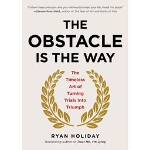
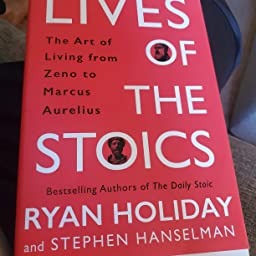

Rachit Sharma
Davis, CA 95014 · (408) 425-7732 · rachitsharma613@gmail.com
I am passionate about building software that fixes the worlds problems, no matter how big or small. This goal lead me to learn programming as a Freshman in high school and has continued to push me in my journey through college. Specifically, I'm interested in web and app development as well as API design. I hope to contribute to the growing ways in which these fields are transforming the world!
Projects
SortMyClasses Chrome Extension (Link)
On the website Schedule Builder, UC Davis students search and sign up for courses. I built a chrome extension that sorts the classes students search for by the ratemyprofessor ratings of the professors. I programmed it in Javascript and learned how to communicate between scripts, use fetch to get data from webpages, and use Promises for asynchronous commands.
Simple Social Media Site (Link)
I implemented a simple social media site in order to practice some web development skills. I used Flask in the backend, along with bootstrap in order to make the UI look good. The website, which runs on local host, allows one to sign up and log in, as well as direct message any user. This project required me to work with databases, general backend programming, and UI design with Bootstrap.
Maze Generator (Link)
After learning about Disjoint Sets in my Data Structures and Algorithms class, I created a program that uses disjoint sets to create mazes of any size and graphically display them. Users can adjust the size, download any maze to their computer, and print them out.
Schedule Builder Chrome Extension (Link) (Github)
I used Javascript to build another chrome extension for ScheduleBuilder. It provides direct links to the ratemyprofessor ratings of professors of each class. I gained valuable experience in Javascript and learned about the process of making easy-to-use software for a large range of users.
Experience
Programmer / Research Assistant, UC Davis Genome Center
Duration: 03/21 - 09/21
I worked on a research project at a lab in the UC Davis Genome Center. I was tasked with programming modifications into a machine learning model and testing the results. Through this experience, I learned the ins and outs of Python and its various libraries such as Numpy. I also developed soft skills such as clear communication and critical thinking.
My Favorite Books
As an avid book worm, I love to read books that change my perspective. The books I have read have shaped me in ways I never could have known when I first picked them up. Here are a few books that have influenced me the most:
The Obstacle is the Way
Author: Ryan Holiday
Like many people, I sometimes beat myself up and panic over mistakes and failures. This book taught me how to control my emotions and overcome challenges I will encounter in my life. The way Holiday presents practical habits and skills for better living, along with the countless historical examples, made the book not only enjoyable but life changing. I still use many of the lessons presented in my everyday life.
Lives of the Stoics
Authors: Ryan Holiday & Stephen Hanselman
I had thought stoics were a weird, fringe group of ancient intellectuals. This book taught me that not only was that not true, but the lessons the stoics exposed could be used to enhance the quality of my life. By the end of the book, I had made signficant changes to my system of thinking and living. It also sparked my interest in the fascinating history of Ancient Greece and Rome.
Paris 1919
Author: Margaret MacMillan
I had always been curious about the history of Europe and the Middle East, and how the conflicts and passions of today were shaped by the preceding centuries. This book taught me the history of the various cultures and nations in Eurasia, as well as the unfathamable destruction and pain world war one caused. Much of my knowledge of history and the connections of past events to present issues comes from this book.
Steal Like an Artist
Author: Austin Kleon
Every creator is an artist, from a muscician to a programmer. This book brought so much inspiration and inspired me to bring out my creative side through personal projects. I have found myself repeatidly reviewing the nonintuitive ideas presented in this book.